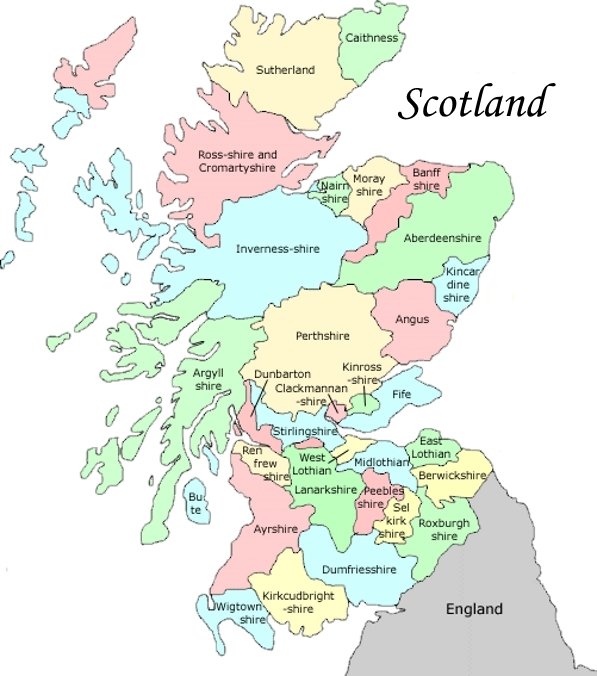

|
Veitch Index > Geographic Index
Veitch Records Sorted by Geographic Location (click
map to open)
 |
- Aberdeenshire
- Angus (or Forfarshire)
- Argyllshire
- Ayrshire
- Banffshire
- Berwickshire
- Bute
- Caithness
- Clackmannanshire
- Dumfriesshire
- Dunbartonshire
- East Lothian (or Haddingtonshire)
- Fife (Kingdom of)
- Inverness-shire
- Kincardineshire
- Kinross-shire
- Kirkcudbrightshire
- Lanarkshire
- Midlothian (or Edinburghshire)
- Moray (or Elginshire)
- Nairnshire
- Orkney Islands
- Peeblesshire
- Perthshire
- Renfrewshire
- Ross & Cromarty
- Roxburghshire
- Selkirkshire
- Shetland (or Zetland) Islands
- Stirlingshire
- Sutherland
- West Lothian (or Linlithgowshire)
- Wigtonshire
|
|